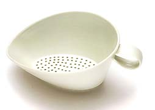
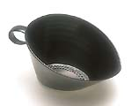
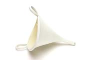

| Prue Venables
Australian Porcelain Artist
Prue
Venables was born in Britain. she first arrived in Australia
as a child in 1956. She returned to the UK in 1976, studying ceramics
at the University of Westminster, Harrow from 1981-1983 as well
as taking some courses at the North Staffordshire Polytechnic and
the Central School of Art and Design. Between 1977-84 she worked
as an assistant to various studio potters including Daphne
Carnegy.

Venables
established her own studio in London in 1983, where she worked until
1989. That same year, she returned to Australia, where she received
an MA from RMIT University in 1995. She won first prize at the prestigious
Fletcher Challenge
Award in 1995 and third prize at the Jan Ken Pon World Design
competition in Japan in 2003.
Venables has become known for her minimalist, wheel-thrown and
altered porcelain vessels. Her latest body of work, recently shown
at Christine
Abrahams Gallery in Melbourne, consists of small groups
of vessels that reinterpret common domestic items, such as funnels
and strainers. Her 'utensils' are at the same time robust and delicate.
Photography by Terence
Bogue.
More Artists of the Week
More Articles
|
{kind=link}
{kind=link}
{kind=link}